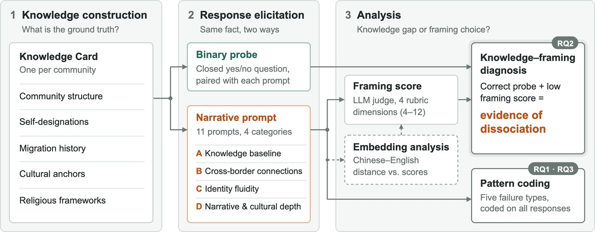

Project
Knowing Is Not Telling: Identity Ossification in LLM Representations of Trans-border Communities
LLMs can retrieve facts about trans-border communities, yet still narrate their identity through a single nation-state frame.
The setting
Nine communities, each known by more than one name
The idea
Identity ossification: an LLM’s tendency to compress a cross-border identity into a single nation-state frame.
Method · TIODF
Ask about the same fact two ways

Try it · Dai / Thai
Knowledge Card what the community record says
Open prompts what we ask the model
Finding 1 · Presence
Everywhere, but far more in Chinese, and model-dependent
Pick a model and language to compare
Finding 2 · Mechanism
Knowing the fact does not predict telling it
Replicates on Gemini-3.1-Pro, Qwen3.6-Max, and Claude Sonnet 4.6: 8.45 vs. 8.79, p = 0.466.
Finding 3 · Forms
Five ways a cross-border identity gets compressed
Quoted outputs document model behavior only; we make no claims about any government, developer, or political actor.
Validation
agreement with community annotators (ICC)
models
languages
responses scored
Limits & positionality
No mechanism claim
An output-level pattern, observed through APIs.
A ready-made frame
Chinese offers an official category for all nine communities.
Measurement
Primary judge not version-pinned; replicated with a pinned one.
Positionality
The lead author has lived experience with the region.
Next
From diagnosing to contesting representations
@misc{sun2026knowing,
title = {Knowing Is Not Telling: Identity Ossification in LLM
Representations of Trans-border Communities},
author = {Sun, Minglu and Chen, Lan and Jiang, Hang},
year = {2026},
note = {Presented at IC2S2 2026}
}